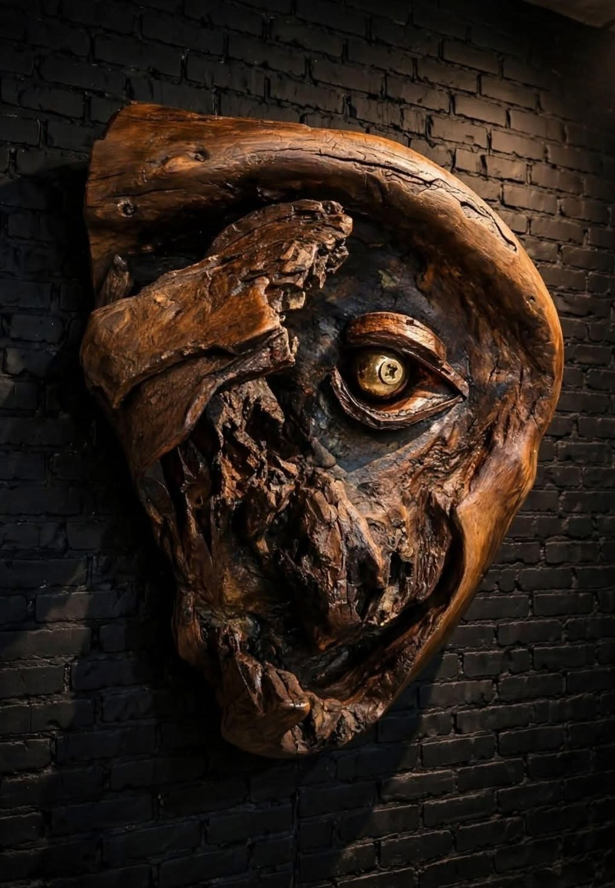
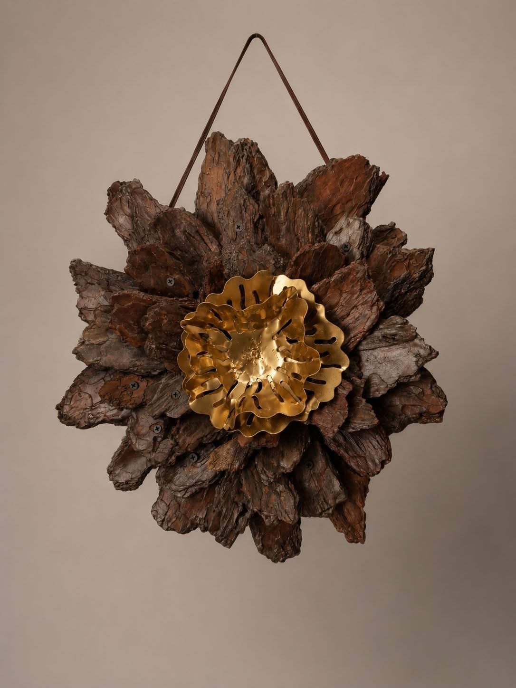

Rzeźba w drewnie · prace unikatowe
Drugie życie drewna
Rzeźby z odłamków i gałęzi, które las spisał na stratę. Każda praca jest jedyna, bo jedyny był kawałek drewna, z którego powstała.

Wystawa
Cztery sale
Prace ułożone w cykle, tak jak powstawały: z tego samego lasu, tego samego pytania, tego samego materiału.

Metryka drewna
Każda rzeźba ma historię, zanim trafi do pracowni
Do każdej pracy dołączamy metrykę: skąd pochodzi fragment drewna i czym był, zanim stał się rzeźbą.
- Praca
- Kwiat z kory
- Gatunek
- [GATUNEK DREWNA]
- Znaleziono
- [MIEJSCE I ROK]
- Czym było
- [NP. OPADŁA KORA]
- Wymiary
- [WYMIARY]
- Dostępność
- [DOSTĘPNA / W KOLEKCJI]